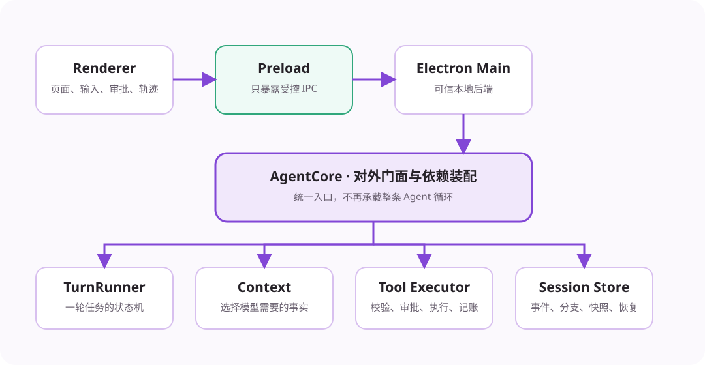

先记住一件事：模型只负责提出下一步，SeeCoder 程序负责保存状态、执行工具、检查安全并决定何时结束。
大语言模型可以生成文字和结构化工具请求，但它不能直接读取你的磁盘。模型说“我修改了文件”，不代表文件真的发生了变化。必须有本地程序接住工具请求，完成写入或命令执行，再把真实结果返回给模型。
编程 Agent 的核心不是一段很长的提示词，而是一个反复运行的闭环：

| 部分 | 用简单的话解释 |
|---|---|
| 界面 | 接收任务，展示回复、工具活动、审批、Diff 和错误。 |
| Electron Main | 本机可信后端。它持有工作区、设置和 Agent Core。 |
| AgentCore | 对外统一入口，同时把下面的运行组件装配起来。 |
| TurnRunner | 运行一次用户请求，循环调用模型和工具。 |
| ToolCallExecutor | 处理一次工具调用的校验、审批、执行、超时和记账。 |
| SessionStore | 保存事件、分支、状态、快照和大型工具结果。 |
一个长期任务容器。关闭应用后仍能恢复，也能从历史位置创建分支。
用户在 Session 中发出的一次请求。一次 Turn 内部可以多次调用模型。
Turn 内的一次循环：准备上下文、调用模型、执行工具、处理结果。
模型能够请求的本地能力，例如读取文件、应用补丁和运行测试。
SeeCoder 已经具备持久化 Session、明确的 Turn 状态机、上下文压缩、工具审批、动态干预、可回滚文件修改、增量分支、并发控制和完整测试。它仍是单机桌面应用，没有远程调度集群，但核心 Agent 能力已经形成完整工程闭环。
模型给建议，TurnRunner 控制循环，ToolCallExecutor 安全执行，SessionStore 保存事实，界面只负责交互。